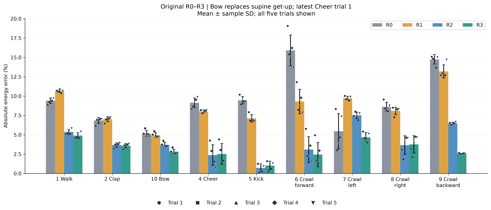
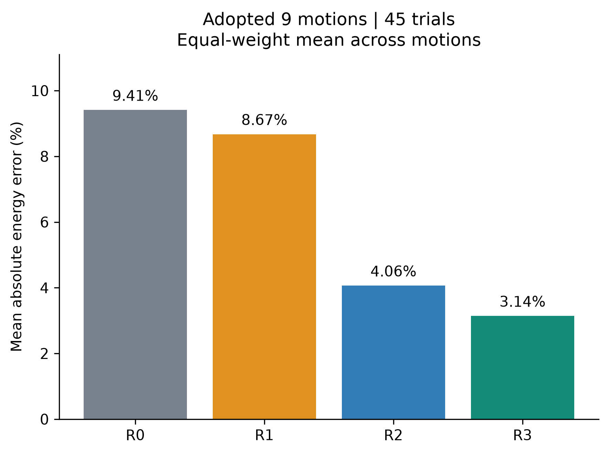

お辞儀を採用した9動作・最新チア取り直し反映 再学習前の旧モデルR0〜R3。仰向け起き上がりを外し、10番お辞儀（速度1/6）を採用。 採用番号: 1, 2, 10, 4, 5, 6, 7, 8, 9。コンソールではお辞儀は引き続き10番です。 各動作5回、計45試行が現在の通信品質（5 ms）に合格。 元の3 ms基準にも合格: 45/45。通信品質は機械的動作成功を保証しません。 最新4-1: B01_M004_A01_20261109_221246_117798 チア5回平均: 直前 → 最新 R0: 8.568% → 9.129%（最新1回目 8.368%） R1: 8.335% → 8.028%（最新1回目 8.193%） R2: 3.782% → 2.378%（最新1回目 4.261%） R3: 3.955% → 2.521%（最新1回目 4.404%） 採用9動作の全体平均: R0: 9.411% R1: 8.675% R2: 4.064% R3: 3.142% 誤差=100×|予測エネルギー−実測エネルギー|/実測エネルギー。棒は5回平均、縦線は標本標準偏差。 評価動作の選択および再測定は結果を確認した後に行っています。旧9動作との平均差は、同一評価集合での改善を意味しません。 11番・12番は本集計に含めていません。元の記録と過去レポートは保持しています。


| 動作 | R0 | R1 | R2 | R3 |
|---|---|---|---|---|
| 1 歩く | 9.401 | 10.676 | 5.360 | 4.889 |
| 2 クラップ | 6.843 | 7.022 | 3.687 | 3.585 |
| 10 お辞儀 | 5.153 | 4.943 | 3.714 | 2.813 |
| 4 チア | 9.129 | 8.028 | 2.378 | 2.521 |
| 5 キック | 9.456 | 7.115 | 0.713 | 1.019 |
| 6 前進クロール | 15.899 | 9.297 | 3.084 | 2.439 |
| 7 左クロール | 5.452 | 9.719 | 7.514 | 4.667 |
| 8 右クロール | 8.625 | 8.083 | 3.651 | 3.763 |
| 9 後退クロール | 14.745 | 13.189 | 6.476 | 2.586 |